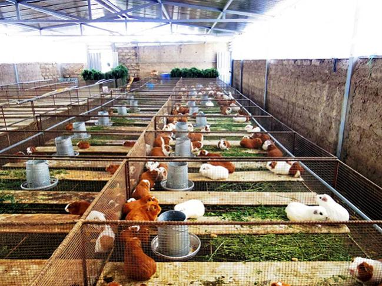

Cuyes EcoAndinos
CUYES ECOANDINOS es una empresa 100% peruana de prestigio dedicada a la crianza y comercialización de la carne del cuy (Cavia Porcellus) en la provincia de Huamanga, departamento de Ayacucho a 2761msnm, somos una granja líder en la industria que ofrece los mejores productos (reproductores y consumo) para una nutrición saludable que potencia tu vida diaria.
Nuestro objetivo es llegar a convertirnos en la primera empresa exportadora de carne de cuy. Es una empresa joven constituída en el 2020, pero que ya está ganando un sitial en el negocio. Contamos con una granja de 5 000 mil reproductores y otra con proyección a 10 000 mil reproductores.
Inicio de una historia
Establecidos en el sector de Quicapata - Carmen Alto, donde se inició un bello recorrido, prestando gran cuidado al ritmo natural del animal, los cultivos de forraje, las estaciones y el medio ambiente. En nuestra empresa, las riquezas de tradición agrícola cohabitan con el dinamismo de las nuevas tecnologías estableciendo una compañía llena de valores antiguos y nuevos productos. Hoy seguimos reinventándonos para acercarnos a nuestros clientes.